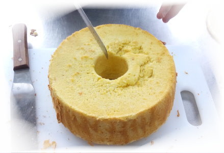

根據「本草綱目」等古代文獻記載，「甘藷味甘、性平，有補虛乏、益氣生津、健脾胃、寬腸胃及通便秘的功效」，使人健康少疾病。甘藷還可中和人體因吃了過多的肉類、蛋或疲勞所累積過多的酸，減輕人體的代謝負擔；另外，甘藷富含的膠原及粘液多醣類物質，可以預防動脈血管硬化和保持血管彈性及暢通，分解多餘膽固醇的排泄作用，是一種好吃且對身體有益的健康食品。近年來的醫學研究也都證實，甘藷的確是營養豐富的健康食品。日本人在很久以前就將地瓜視為高級的健康食品，根據日本地區對長壽者的飲食調查，發現這些長壽老人有一個共通特點，就是平日的飲食一定離不開地瓜，可見甘藷對人體健康幫助甚大。甘藷就是我們常說的「地瓜」，我們將食用地瓜的好處整理如下：
一、地瓜含豐富的纖維素與維他命C，能有效預防癌症。地瓜中的纖維素可刺激腸胃蠕動、預防便秘，使腸胃保持暢通，防止大腸產生病變。而維他命C除了具抗氧化功能外，還能幫助清潔肺部與大腸，對預防肺癌和大腸癌等癌症有不錯的功效。
二、地瓜含的纖維素可吸收大量水分，增加飽足感、降低食慾，減少平日卡路里的攝取量，加上纖維素無法被腸道吸收，可阻擾醣類轉成脂肪，因此具減重效果。
三、地瓜含大量寡醣，可滋養腸道益菌、抑制壞菌，而被抑制的壞菌會由氣體排出。（寡醣可提供腸道益菌所需養分，使比菲德氏等益菌長得好，進而抑制害菌，達到人體腸內健康，而增強抵抗力。）
四、地瓜是少數甜食中屬於鹼性的物質，含豐富的維他命C1和B2，鉀的含量也很豐富，所以能夠預防胃潰瘍，保護黏膜，預防感冒，及幫助人體加速消除疲勞它可以中和人體的酸性。
五、地瓜所含的粘蛋白，是一種多糖和蛋白質的混合物，能保持人體血管壁的彈性，防止動脈硬化的發生。又含豐富的膳食纖維，膳食纖維在腸道中不被吸收，吸水性好，可預防便秘和某些腸道疾病。
六、紅心地瓜的類胡蘿蔔素相當高，是極佳的抗氧化劑，可預防心血管疾病。類胡蘿蔔素又是維生素A的前身，具有防癌、抗癌的效果。



資料來源：農業知識入口網站、養生藥膳園地、【自然律例──地瓜餐創始人的養生之道】（陳堅真著）